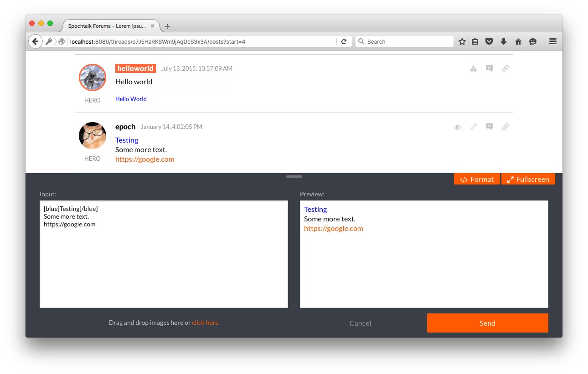

Warning this project is under active development, design is subject to change
Next generation forum software. Epochtalk is a forum frontend designed to be paired with the core-pg backend. Epochtalk forum software utilizes technologies such as AngularJS, Browserify, Postgres and Foundation for improved performance and user experience as compared to existing forum software.
1.3.14
1.3.14
1.3.14
1.3.14
0.7.1
5.5.1
~0.2.15
0.0.3
^0.9.0
^2.1.20
^0.8.0
^2.6.4
^2.6.1
^1.3.0
^8.1.3
^0.18.0
^2.5.1
^0.8.0
^0.1.0
^1.0.3
^1.0.0
^0.9.11
^0.16.5
^5.1.1
^4.1.0
^4.0.1
^8.2.0
^2.12.0
^6.0.8
^9.0.3
^5.0.0
^0.19.0
^2.4.1
^6.1.0
^1.8.14
^0.11.0
^0.5.0
^0.3.11
^2.1.1
^1.4.1
^1.3.2
^4.2.0
^2.53.0
^1.4.3
^1.0.3
^0.6.3
^1.2.1
$ git clone git@github.com:epochtalk/epochtalk.git
$ cd epochtalk $ npm install
$ bower install
$ node cli/index.js --create
foreman startcommand Epochtalk will start its webserver and compile all JavaScript and css. Once compilation is complete the forum can be viewed at
http://localhost:8080
$ foreman start -f Procfile.dev #for development $ foreman start -f #for production
adminand password
admin1234. Visit your profile by clicking the link in the top right corner of the page, then change your username and password.
npm link. Change directories into the
node_modulesof your checked out Epochtalk project and run
npm link epochtalk-core-pg. This will ensure that Epochtalk is using the latest master of core-pg instead of the npm version. Then run
npm run db-migratefrom the root directory of your Epochtalk project to ensure all migrations are up to date.
Forum configurations can be set either manually or using the admin panel.
The forum configs can be set manually with a .env file in the root directory of the project.
HOST=localhost PORT=8080 LOG_ENABLED=true PUBLIC_URL=http://localhost:8080 PRIVATE_KEY=Change this to something more secure VERIFY_REGISTRATION=false LOGIN_REQUIRED=false WEBSITE_TITLE=Epochtalk Forums WEBSITE_DESCRIPTION=Open source forum software WEBSITE_KEYWORDS=open source, free forum, forum software, forum WEBSITE_LOGO= WEBSITE_FAVICON= EMAILER_SENDER=info@example.com EMAILER_HOST=smtp.gmail.com EMAILER_PORT=465 EMAILER_USER=username EMAILER_PASS=password EMAILER_SECURE=true IMAGES_STORAGE=local IMAGES_MAX_SIZE=10485760 IMAGES_EXPIRATION=7200000 IMAGES_INTERVAL=900000 IMAGES_LOCAL_DIR=/public/images IMAGES_LOCAL_PATH=/static/images IMAGES_S3_ROOT=http://some.where IMAGES_S3_DIR=images/ IMAGES_S3_BUCKET=bukkit IMAGES_S3_REGION=region IMAGES_S3_ACCESS_KEY=testkey IMAGES_S3_SECRET_KEY=testkey
Configurations can also be set using the settings tab in the administration panel.
Each post is crafted through a unique editor with a live content preview.
As for BBCode, the tags that are parsed are based off the SMF 1.0 BBCode spec but with some modifications as per the BitcoinTalk forum. Due to the fact that BBCode differs from forum to forum, a preview window is provided to the right of the main user input to preview what the post will look like once it has been sent to the server. The editor itself will parse the user input in real time with a 250 millisecond debounce. So user can continue to type and the text will not be parsed until 250 millisecond after the last keypress.
To view the list of supported BBCode tags click theformattingbutton at the top right of the editor:
All user typed HTML is escaped using their decimal encoding while any other HTML is cleaned using punkave's sanitize-html library. All BBCode input is parsed through our modified BBCode-Parser library. This ensures that all content passed to the server is sanitized from any malicious code. Also, Angular's sanitization library also ensures that anything missed through the above process is yet again cleaned before it is shown on the client's browser.
All inputs on the forum are cleaned to different degrees.
Title like inputs are stripped of all html while description like inputs are allowed only formatting based html tags (<b>,
<em>,
<table>but not
<div>,
<img>, and
<span>). Posts and Signatures are given the full treatment as described above but allow more html like
<img>.
To see planned backend changes, visit the core-pg issues page.
Please leave us feedback using github issues.
The MIT License (MIT)
Copyright (c) 2015 Epochtalk
Permission is hereby granted, free of charge, to any person obtaining a copy of this software and associated documentation files (the "Software"), to deal in the Software without restriction, including without limitation the rights to use, copy, modify, merge, publish, distribute, sublicense, and/or sell copies of the Software, and to permit persons to whom the Software is furnished to do so, subject to the following conditions:
The above copyright notice and this permission notice shall be included in all copies or substantial portions of the Software.
THE SOFTWARE IS PROVIDED "AS IS", WITHOUT WARRANTY OF ANY KIND, EXPRESS OR IMPLIED, INCLUDING BUT NOT LIMITED TO THE WARRANTIES OF MERCHANTABILITY, FITNESS FOR A PARTICULAR PURPOSE AND NONINFRINGEMENT. IN NO EVENT SHALL THE AUTHORS OR COPYRIGHT HOLDERS BE LIABLE FOR ANY CLAIM, DAMAGES OR OTHER LIABILITY, WHETHER IN AN ACTION OF CONTRACT, TORT OR OTHERWISE, ARISING FROM, OUT OF OR IN CONNECTION WITH THE SOFTWARE OR THE USE OR OTHER DEALINGS IN THE SOFTWARE.